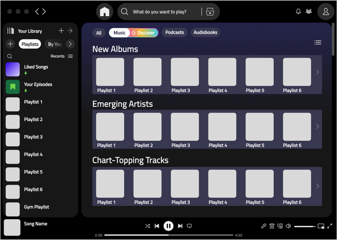
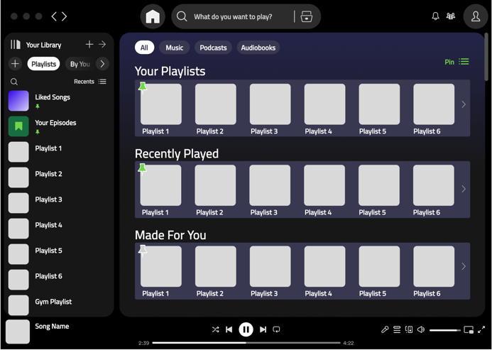
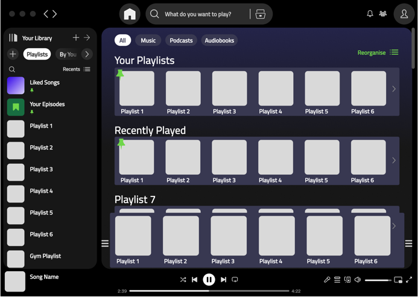
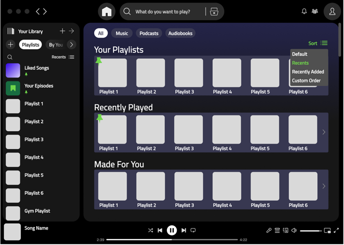
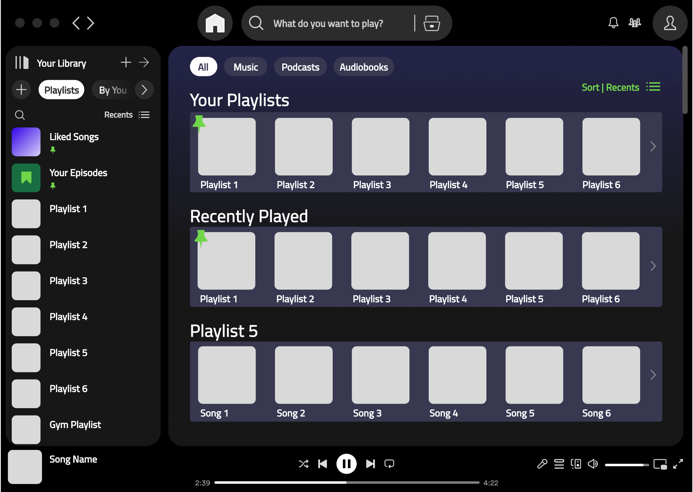
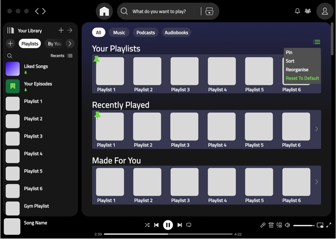

Try it: open a section's ⋯ menu to pin it to the top, or switch tabs. Open full screen ↗
The redesign
Three changes, one goal
Make Spotify's best feature, personalisation, easy to find and easy to shape.
Sections that say what they are
Content sits under bold headings like "Made For You" and "Based On Your Recent Listening", so personalised picks stand out from generic tiles. In Music, a Discover view gives new releases their own sections.

Pin what matters to the top
Every section has a menu. Choosing Pin moves that section to the top of the homepage, and a label confirms the change straight away, so the page starts with what you care about most.

Sort, rearrange or reset
Sort orders a section by recents, recently added or a custom order. Reorganise adds drag handles so sections can be moved up or down. Reset to Default undoes everything in one click.

The process
How I got there
- 01
Business analysis
Business Model Canvas, SWOT and a User-Centred Design canvas
- 02
Evaluation
The current homepage, checked against complaints on Spotify's forums
- 03
Models and principles
Conceptual and mental models, and five interaction design principles
- 04
Wireframes
The redesigned homepage and every section control
01
Background
Spotify had over 500 million users when I did this project. It competes with Apple Music, YouTube Music and Amazon Music, and its real edge is personalisation: recommendation algorithms that learn what each person listens to.
But the homepage, the first thing everyone sees, makes that edge hard to notice. I wanted to find out why, and what a homepage built around personalisation could look like.
02
Business analysis
I started with where Spotify stands as a business, using a Business Model Canvas and a SWOT analysis.
Strengths
- Advanced, personalised recommendation algorithms
- A wide library of music, podcasts and audiobooks
Weaknesses
- A cluttered homepage with inconsistent organisation
- Little user control over what's shown
Opportunities
- More engagement through customisation
- Better accessibility to reach more users
Threats
- Strong competition from Apple Music, YouTube Music and Amazon Music
- Rising licensing costs
A User-Centred Design canvas then put the people at the centre. It showed two very different groups to design for, with fears that pull in opposite directions:
Users
- Casual listeners who want a simple platform
- People who want advanced customisation
Motives
- Quick access to relevant content
- A personalised, enjoyable experience
Fears
- Losing access to favourite content
- Features that feel complex or overwhelming
Value proposition: a fully customisable, user-focused homepage that makes discovery simpler while still serving personalised recommendations.
03
Evaluating the current homepage
I reviewed the desktop homepage across the Music, Podcasts and Audiobooks tabs and compared it with complaints on the Spotify Community forums. Three problems kept coming up:
Poor organisation
Recommendations are buried beneath unrelated tiles, so people scroll past the thing Spotify does best.
Lack of clarity
Small taglines like "Trending Now" don't guide you, so personal and generic content blur together.
Limited customisation
Everyone gets the same layout, whether they're there for music, podcasts or audiobooks.
Accessibility suffers too: small text and inconsistent content sizes make the page harder to use for people with low vision.
Usability questions
- Can people find personalised recommendations without scrolling too far?
- Are the Music, Podcasts and Audiobooks tabs clear?
- Is content grouped in a way that reduces cognitive load?
Experience questions
- Does the homepage feel tailored to the person using it?
- Are personalised recommendations visually prominent?
- Is browsing enjoyable rather than frustrating?
04
Defining the goal
How might Spotify's homepage show off its personalisation without overwhelming people who just want to press play?
Simplify navigation
Group content under distinct subheadings to cut cognitive load.
Make personalisation visible
Put recommendations where people can't miss them, with a clear visual hierarchy.
Give people control
Let them pin, sort and rearrange sections, without making customisation compulsory.
05
From a stream to a magazine
I compared the conceptual models behind the current homepage with the ones I wanted to replace them with. Both new models are familiar from other apps, so the structure shouldn't need learning.
Homepage as a stream
- Effortless scrolling and exploration
- Simple, predictable navigation
- Irrelevant content mixed in with personal picks
- No control over what comes first
Tabs as categories
- Easy to separate music, podcasts and audiobooks
- Too broad, with no subcategories to help you discover anything new
A magazine layout
- Bold section headings make content easier to scan and find
- Clearer organisation reduces cognitive load
- People may need a little time to adjust
A customisable dashboard
- Pinning sections works like arranging widgets on a phone
- Relevant content comes first, which boosts engagement
- Some people may find customisation unnecessary
+ benefit − limitation
06
Design principles
I checked the current design against five interaction design principles, and used each gap to shape the redesign.
| Principle | Current design | Redesign |
|---|---|---|
| Visibility | "Made For You" is buried in the stream, and taglines like "Trending Now" are too small to notice | Bold subheadings group content and make recommendations obvious |
| Feedback | Very little feedback when you interact | A clear confirmation when you pin, sort or reorganise a section |
| Consistency | Branding is consistent, but organisation differs between tabs | The same headings and section menu across every tab, keeping Spotify's branding |
| Constraints | No customisation at all | Customisation within limits: essential sections like "Made For You" can't be removed |
| Affordance | Few cues about what you can do | Clear icons, drag handles and distinct buttons for each action |
07
Interaction details
Each control is a two-step action from the section menu, and the label in the corner always shows what's been applied.



08
Reflection and next steps
The strongest part of this project is the thinking underneath it. The redesign comes from Spotify's business position and real user complaints, not just opinions about what looks cluttered.
Customisation has trade-offs. Some people won't want it, and a new structure takes time to get used to. That's why the default layout has to work well on its own, and why Reset to Default is always one click away.
Test discoverability
Do people find Pin and Reorganise without being shown where they are?
Question Reorganise
Does it add enough value to justify the extra complexity?
Check the headings
Do they read as helpful structure, or just more text to scan past?
Go responsive
Design how the layout adapts to tablet and mobile without losing clarity.